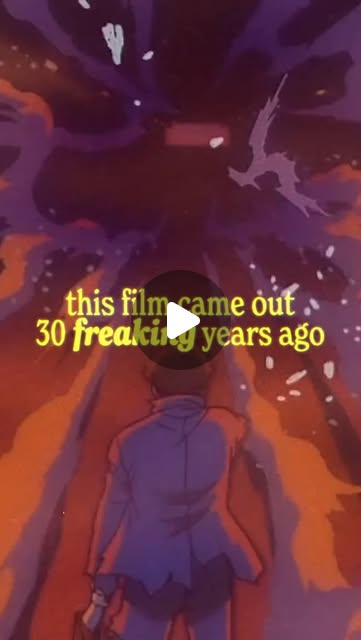

Instagram Reel

I’m not gonna lie, “Memories” caught me completely off guard. It’s haunting, ...
video transcript (enriched by ClaudeClaw)
Summary
[CAPTION]
I’m not gonna lie, “Memories” caught me completely off guard. It’s haunting, poetic, and way more emotional than I expected it to be.
[CAPTION]
I’m not gonna lie, “Memories” caught me completely off guard. It’s haunting, poetic, and way more emotional than I expected it to be.
It’s a film about the things we bury, the stories we tell ourselves, and the ghosts that never really go away.
#whatowatch #animation #movierecommendation #cinema #anime
[VIDEO]
This film came out 30 freaking years ago, and somehow it still feels more relevant than it ever has. This is day five of sharing some of the strangest, most obscure, and downright traumatic animated films from the 90s. And today's film starts as a sci-fi, turns into a tragedy, and ends up being pure existential horror. This is memories. So, Memories is comprised of three short stories: Magnetic Rose, Stink Bomb, and Cannon Fodder. The first story, Magnetic Rose, follows a team of space salvagers who stumble upon a distress signal drifting through deep space, but when they board the derelict ship, they find themselves trapped in this haunting illusion. Then there's Stink Bomb, a dark comedy about a man who accidentally turns himself into a walking bioweapon, killing everyone around him, without ever realizing why. And finally, Cannon Fodder. A surreal Orwellian portrait of a city that exists solely to fire cannons at an unseen enemy. And together, these stories form this almost operatic cycle of remembering, misremembering, and forgetting, of how nostalgia, routine, and obedience can all each become prisons of their own. And even though that thought might be a little unsettling at first, I think there's this message in there somewhere, that's actually quite beautiful. And it's this idea that our memories aren't just pictures in our heads, or stories we tell ourselves to make sense of the past. They're these living, breathing things that continuously manage to shape our lives.
View original on Instagram Reel →